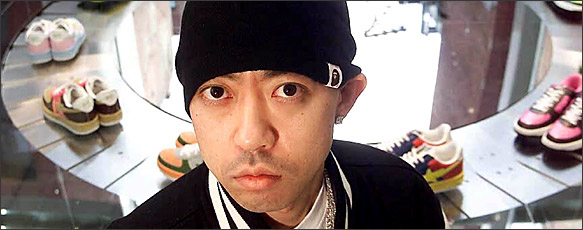
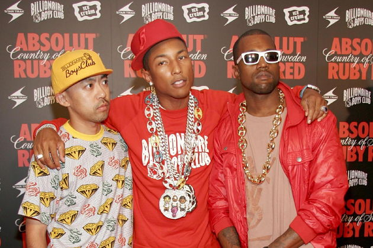

About BAPE

BAPE는 1993년, 일본의 패션디자이너, NIGO에 의해 설립이 되었습니다.
그는 대학 졸업 후 바로 NOWHERE라는 매점을 직접 열게됩니다.
BAPE의 마크인 원숭이는 영화 혹성탈출에 착안하여 만들어 지는데,
미지근한 물에서 목욕하는 원숭이를 표현하여 풍요로운 삶을 표현하려 했다고 합니다.

BAPE가 유명해진 이유 중 하나는 BAPE에 대한 셀럽들의 애정입니다.
NIGO의 절친, 퍼렐 윌리엄스가 초창기에 많이 착용을 해주면서 미국에서 BAPE의 인지도를 쌓을 수 있었고,
그 후 칸예, 제이지 등 많은 래퍼들이 BAPE 제품을 착용해 주면서, 카모 열풍을 만들어 냈습니다.
이전